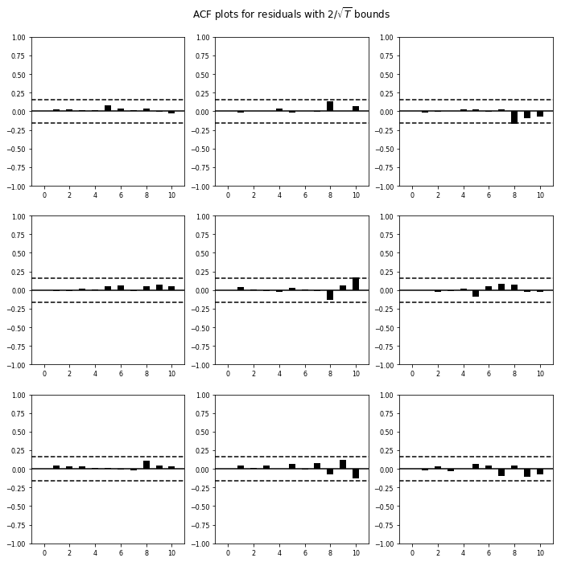
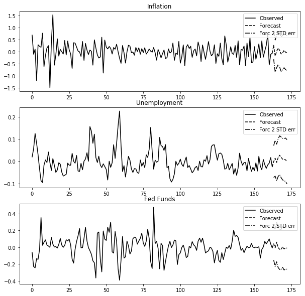
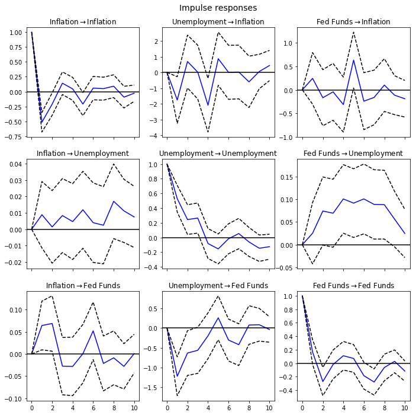
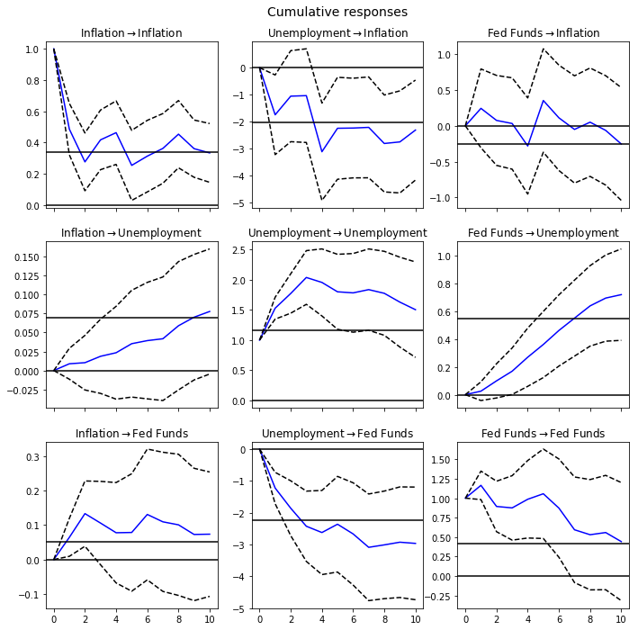

Vector Autoregression#
In this notebook we will run Vector Autoregression (VAR) using python packages. We will revisit the exercise from Vector Autoregression by Stock and Watson (2001).
VAR(p) Process###
We are interested in modeling a \(T\times K\) multivariate time series \(Y\), where \(T\) denotes the number of observations and \(K\) the number of variables. One way of estimating relationships between the time series and their lagged values is the vector autoregression process:
\[
Y_t = A + B_1 Y_{t-1} + B_2 Y_{t-2} + \cdots + A_p Y_{t-p} + u_t
\]
where \(u_t \sim N(0,\sigma_u)\) and \(A_i\) is a \(K\times K\) coefficient matrix.
import pandas as pd
import numpy as np
import statsmodels.api as sm
from statsmodels.tsa.api import VAR
Prepare data#
data = pd.read_excel('SW2001_data.xlsx')
data.index = pd.DatetimeIndex(data['obs'])
data_use = data[['Inflation','Unemployment','Fed Funds']]
---------------------------------------------------------------------------
FileNotFoundError Traceback (most recent call last)
Cell In[2], line 1
----> 1 data = pd.read_excel('SW2001_data.xlsx')
2 data.index = pd.DatetimeIndex(data['obs'])
3 data_use = data[['Inflation','Unemployment','Fed Funds']]
File ~/.local/lib/python3.10/site-packages/pandas/util/_decorators.py:211, in deprecate_kwarg.<locals>._deprecate_kwarg.<locals>.wrapper(*args, **kwargs)
209 else:
210 kwargs[new_arg_name] = new_arg_value
--> 211 return func(*args, **kwargs)
File ~/.local/lib/python3.10/site-packages/pandas/util/_decorators.py:331, in deprecate_nonkeyword_arguments.<locals>.decorate.<locals>.wrapper(*args, **kwargs)
325 if len(args) > num_allow_args:
326 warnings.warn(
327 msg.format(arguments=_format_argument_list(allow_args)),
328 FutureWarning,
329 stacklevel=find_stack_level(),
330 )
--> 331 return func(*args, **kwargs)
File ~/.local/lib/python3.10/site-packages/pandas/io/excel/_base.py:482, in read_excel(io, sheet_name, header, names, index_col, usecols, squeeze, dtype, engine, converters, true_values, false_values, skiprows, nrows, na_values, keep_default_na, na_filter, verbose, parse_dates, date_parser, thousands, decimal, comment, skipfooter, convert_float, mangle_dupe_cols, storage_options)
480 if not isinstance(io, ExcelFile):
481 should_close = True
--> 482 io = ExcelFile(io, storage_options=storage_options, engine=engine)
483 elif engine and engine != io.engine:
484 raise ValueError(
485 "Engine should not be specified when passing "
486 "an ExcelFile - ExcelFile already has the engine set"
487 )
File ~/.local/lib/python3.10/site-packages/pandas/io/excel/_base.py:1652, in ExcelFile.__init__(self, path_or_buffer, engine, storage_options)
1650 ext = "xls"
1651 else:
-> 1652 ext = inspect_excel_format(
1653 content_or_path=path_or_buffer, storage_options=storage_options
1654 )
1655 if ext is None:
1656 raise ValueError(
1657 "Excel file format cannot be determined, you must specify "
1658 "an engine manually."
1659 )
File ~/.local/lib/python3.10/site-packages/pandas/io/excel/_base.py:1525, in inspect_excel_format(content_or_path, storage_options)
1522 if isinstance(content_or_path, bytes):
1523 content_or_path = BytesIO(content_or_path)
-> 1525 with get_handle(
1526 content_or_path, "rb", storage_options=storage_options, is_text=False
1527 ) as handle:
1528 stream = handle.handle
1529 stream.seek(0)
File ~/.local/lib/python3.10/site-packages/pandas/io/common.py:865, in get_handle(path_or_buf, mode, encoding, compression, memory_map, is_text, errors, storage_options)
856 handle = open(
857 handle,
858 ioargs.mode,
(...)
861 newline="",
862 )
863 else:
864 # Binary mode
--> 865 handle = open(handle, ioargs.mode)
866 handles.append(handle)
868 # Convert BytesIO or file objects passed with an encoding
FileNotFoundError: [Errno 2] No such file or directory: 'SW2001_data.xlsx'
data_use.head(10)
| Inflation | Unemployment | Fed Funds | |
|---|---|---|---|
| obs | |||
| 1960-01-01 | 0.908472 | 5.133333 | 3.933333 |
| 1960-04-01 | 1.810777 | 5.233333 | 3.696667 |
| 1960-07-01 | 1.622720 | 5.533333 | 2.936667 |
| 1960-10-01 | 1.795335 | 6.266667 | 2.296667 |
| 1961-01-01 | 0.537033 | 6.800000 | 2.003333 |
| 1961-04-01 | 0.714924 | 7.000000 | 1.733333 |
| 1961-07-01 | 0.891862 | 6.766667 | 1.683333 |
| 1961-10-01 | 1.067616 | 6.200000 | 2.400000 |
| 1962-01-01 | 2.303439 | 5.633333 | 2.456667 |
| 1962-04-01 | 1.234841 | 5.533333 | 2.606667 |
data['Inflation'].plot(title = 'Inflation')
<matplotlib.axes._subplots.AxesSubplot at 0x2341fa7d7b8>
data['Unemployment'].plot(title = 'Unemployment')
<matplotlib.axes._subplots.AxesSubplot at 0x2341fae3978>
data['Fed Funds'].plot(title = 'Fed Funds')
<matplotlib.axes._subplots.AxesSubplot at 0x2341fabf2e8>
# compute changes
data_ret = np.log(data_use).diff().dropna()
# construct model
model = VAR(data_ret)
Fitting#
# Fit model using 8 lags
results = model.fit(8)
results.summary()
Summary of Regression Results
==================================
Model: VAR
Method: OLS
Date: Thu, 24, Oct, 2019
Time: 22:10:24
--------------------------------------------------------------------
No. of Equations: 3.00000 BIC: -11.9402
Nobs: 155.000 HQIC: -12.8147
Log likelihood: 454.689 FPE: 1.50862e-06
AIC: -13.4128 Det(Omega_mle): 9.63293e-07
--------------------------------------------------------------------
Results for equation Inflation
==================================================================================
coefficient std. error t-stat prob
----------------------------------------------------------------------------------
const -0.006230 0.024131 -0.258 0.796
L1.Inflation -0.514844 0.084061 -6.125 0.000
L1.Unemployment -1.748654 0.754045 -2.319 0.020
L1.Fed Funds 0.243865 0.280358 0.870 0.384
L2.Inflation -0.475297 0.094742 -5.017 0.000
L2.Unemployment 1.013126 0.865082 1.171 0.242
L2.Fed Funds -0.038629 0.273746 -0.141 0.888
L3.Inflation -0.232324 0.107010 -2.171 0.030
L3.Unemployment -0.456089 0.870524 -0.524 0.600
L3.Fed Funds 0.162914 0.277477 0.587 0.557
L4.Inflation -0.084555 0.108784 -0.777 0.437
L4.Unemployment -1.379885 0.872522 -1.581 0.114
L4.Fed Funds -0.334072 0.276643 -1.208 0.227
L5.Inflation -0.182486 0.106265 -1.717 0.086
L5.Unemployment -0.029769 0.850554 -0.035 0.972
L5.Fed Funds 0.680054 0.281418 2.417 0.016
L6.Inflation -0.101231 0.105147 -0.963 0.336
L6.Unemployment 0.136967 0.844978 0.162 0.871
L6.Fed Funds -0.063789 0.293058 -0.218 0.828
L7.Inflation -0.139909 0.095271 -1.469 0.142
L7.Unemployment 0.580131 0.842873 0.688 0.491
L7.Fed Funds 0.375119 0.271349 1.382 0.167
L8.Inflation 0.036261 0.084094 0.431 0.666
L8.Unemployment -0.343938 0.751441 -0.458 0.647
L8.Fed Funds 0.263864 0.267509 0.986 0.324
==================================================================================
Results for equation Unemployment
==================================================================================
coefficient std. error t-stat prob
----------------------------------------------------------------------------------
const -0.001997 0.002961 -0.674 0.500
L1.Inflation 0.008867 0.010314 0.860 0.390
L1.Unemployment 0.527872 0.092521 5.705 0.000
L1.Fed Funds 0.025336 0.034400 0.737 0.461
L2.Inflation -0.000303 0.011625 -0.026 0.979
L2.Unemployment 0.011744 0.106146 0.111 0.912
L2.Fed Funds 0.054435 0.033589 1.621 0.105
L3.Inflation 0.003959 0.013130 0.301 0.763
L3.Unemployment 0.205597 0.106813 1.925 0.054
L3.Fed Funds 0.029335 0.034046 0.862 0.389
L4.Inflation -0.005784 0.013348 -0.433 0.665
L4.Unemployment -0.241164 0.107058 -2.253 0.024
L4.Fed Funds 0.067844 0.033944 1.999 0.046
L5.Inflation 0.004443 0.013039 0.341 0.733
L5.Unemployment 0.105290 0.104363 1.009 0.313
L5.Fed Funds 0.028239 0.034530 0.818 0.413
L6.Inflation -0.006386 0.012902 -0.495 0.621
L6.Unemployment 0.115584 0.103679 1.115 0.265
L6.Fed Funds 0.051140 0.035958 1.422 0.155
L7.Inflation -0.006154 0.011690 -0.526 0.599
L7.Unemployment 0.171264 0.103421 1.656 0.098
L7.Fed Funds 0.023369 0.033295 0.702 0.483
L8.Inflation 0.002696 0.010318 0.261 0.794
L8.Unemployment -0.135425 0.092202 -1.469 0.142
L8.Fed Funds 0.041069 0.032823 1.251 0.211
==================================================================================
Results for equation Fed Funds
==================================================================================
coefficient std. error t-stat prob
----------------------------------------------------------------------------------
const 0.001046 0.008043 0.130 0.897
L1.Inflation 0.064263 0.028017 2.294 0.022
L1.Unemployment -1.224222 0.251322 -4.871 0.000
L1.Fed Funds 0.164840 0.093443 1.764 0.078
L2.Inflation 0.102123 0.031577 3.234 0.001
L2.Unemployment 0.325859 0.288331 1.130 0.258
L2.Fed Funds -0.283395 0.091239 -3.106 0.002
L3.Inflation 0.044423 0.035666 1.246 0.213
L3.Unemployment -0.547087 0.290144 -1.886 0.059
L3.Fed Funds 0.141328 0.092483 1.528 0.126
L4.Inflation 0.036794 0.036258 1.015 0.310
L4.Unemployment 0.428170 0.290810 1.472 0.141
L4.Fed Funds 0.097451 0.092205 1.057 0.291
L5.Inflation -0.007478 0.035418 -0.211 0.833
L5.Unemployment 0.228524 0.283488 0.806 0.420
L5.Fed Funds 0.223071 0.093796 2.378 0.017
L6.Inflation 0.048230 0.035045 1.376 0.169
L6.Unemployment -0.114713 0.281630 -0.407 0.684
L6.Fed Funds -0.091599 0.097676 -0.938 0.348
L7.Inflation 0.001792 0.031754 0.056 0.955
L7.Unemployment -0.217228 0.280928 -0.773 0.439
L7.Fed Funds -0.108129 0.090440 -1.196 0.232
L8.Inflation 0.048463 0.028028 1.729 0.084
L8.Unemployment 0.087416 0.250454 0.349 0.727
L8.Fed Funds 0.013047 0.089161 0.146 0.884
==================================================================================
Correlation matrix of residuals
Inflation Unemployment Fed Funds
Inflation 1.000000 -0.069101 0.071163
Unemployment -0.069101 1.000000 -0.406512
Fed Funds 0.071163 -0.406512 1.000000
Plot autocurrelation function#
results.plot_acorr()

Forecasting#
lag_order = results.k_ar
# forecast 8 periods foreward
results.forecast(data_ret.values[-lag_order:],8)
array([[ 0.26208636, -0.00142003, 0.04035941],
[-0.18498492, 0.01331739, -0.0058817 ],
[ 0.01173027, -0.00553678, 0.06132789],
[ 0.1458359 , 0.01553199, -0.00364107],
[ 0.05902579, 0.02686258, -0.02417997],
[-0.10098058, 0.01769744, -0.02785083],
[-0.05486938, 0.00946074, 0.00594001],
[ 0.05403755, 0.00719963, -0.02022299]])
results.plot_forecast(10)

Impulse Response Function (IRF)#
irf = results.irf(10)
irf.plot(orth=False)

Cumulative Effect#
irf.plot_cum_effects(orth=False)
